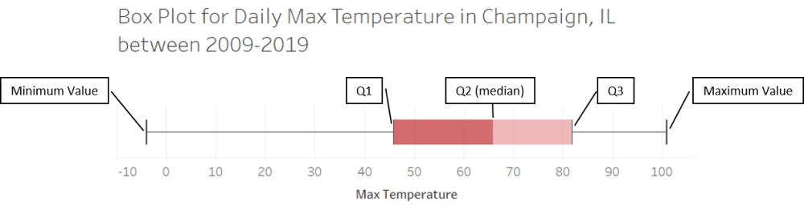
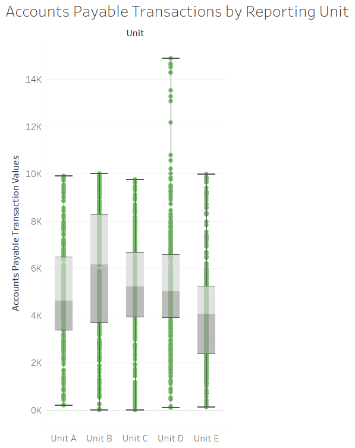

Box Plots#
Box Plot (Sometimes Called a Box and Whisker Plot >^..^<)#
What is a Box Plot?#
A box plot shows the ranges of the data. Before we can show you a box plot, we need to define the word “quartile”. A quartile is one quarter (one fourth) of the data. There are special names for the numbers that separate quartiles:
The number \(Q_1\) is the boundary between the first and second quartiles. \(Q_1\) is the 25th percentile of the data. All data points less than \(Q_1\) are in the first quartile.
The number \(Q_2\) is called the median. Half of the data is less than the median and the other half is greater than the media. Data values between \(Q_1\) and \(Q_2\) are in the second quartile.
The number \(Q_3\) is the boundary between the third and fourth quartiles. Data values between \(Q_2\) (the median) and \(Q_3\) are in the third quartile.
Data values greater than \(Q_3\) are in the fourth quartile.
We summarize these definitions in the following table:
Quartile |
Range |
|---|---|
First quartile |
Data values less than the 25th percentile \(Q_1\) value |
Second quartile |
Data values between the 25th and 50th percentile values (between \(Q_1\) and \(Q_2\)) |
Third quartile |
Data values between the 50th and 75th percentile values (between \(Q_2\) and \(Q_3\)) |
Fourth quartile |
Data values greater than the 75th percentile \(Q_3\) value |
A box plot displays the second and third quartiles with adjacent rectangles that form a “box”. The boundary between the second and third quartiles (i.e. the median value, \(Q_2\)) is shown as a line between these two rectangles. The edges of the box are the 25th and 75th percentiles of the data (\(Q_1\) and \(Q_3\)). Finally, there are two lines that jut out of the sides of the box, like whiskers; one line stretches from the minimum value of the data to the 25th percentile, and the other line stretches from the maximum value of the data to the 75th percentile. You can see an example of a single box plot in Illustration 1.
Illustration 1 Single Box Plot Example#

Illustration 1 presents the box plot for the daily high temperatures from 2009-2019 in Champaign, IL. The lower whisker extends from the lowest temperature recorded in the 10 year period of -4°F to the 25th percentile of 46°F. This means that one quarter of the daily temperatures were between -4°F to 46°F. The lower end of the box (\(Q_1\), sometimes called the lower hinge) is the 25th percentile, and the upper end of the box (\(Q_3\), sometimes called the upper hinge) is the 75th percentile. Half of the data fall in the box of a box plot, which means half of the daily temperatures were between 46°F and 82°F. There is also a line running through the center of the box that represents the median of the data (\(Q_2\)). This means the median high recorded in the past 10 years was 66°F. Finally, the upper whisker extends from the 75th percentile to the maximum recorded temperature for the 10 year period. This means that one quarter of the daily temperatures were between 82°F and 101°F.4
Box plots can also have multiple boxes if you also have a categorical variable in addition to a continuous or discrete variable. For example, let’s say you are given a list of Accounts Payable transactions for a company that has 5 reporting units. The continuous variable is the transaction value and the categorical variable is the reporting unit (A, B, C, D or E). To examine the individual reporting units, you can create a box for each category or reporting unit as seen in Illustration 2.
Illustration 2 Multiple Box Plot Example#

Illustration 2 presents multiple box plots. Each separate box plot represents a different category or reporting unit. For each reporting unit the respective box and whiskers displays the min, max, median, 25th percentile and 75th percentile. Also, you will note that box plots can be displayed as horizontal as in Illustration 1 or vertical as in this illustration. Another characteristic box plots may or may not have are dots to represent each observation or data point. This illustration displays the dots for each observation, while Illustration 1 does not display the dots.
When to Use a Box Plot#
A box plot is useful for understanding the distribution of your data. Specifically, a box plot will show you several important features of your data: the median, min, max, 25th percentile and 75th percentile. A box plot displays where most of your data falls, which is useful when looking for outliers. You can identify an outlier if at the end of a whisker there is a gap with no dots and then a few dots at the end of the whisker. Sometimes outliers fall on both sides of the distribution, and other times the outliers only fall on one side of the distribution. Box plots can also tell you if your distribution is skewed in one direction. For example if the box is closer to one end of a whisker than another.
Box plots and histograms are complements. The histogram shows you the “shape” of your data, i.e. the ranges in which the data fall. A box plot also shows you the distribution of your data, but partially summarizes the data. When examining your data, it is useful to use both types of graphs. However, when presenting your data, especially to non-technical audiences, you should consider which of these two graph types will best communicate your findings.
Box plots can also be used for comparisons. Specifically, you can use box plots to compare the distribution of data across categories. For example, if we again turn to Illustration 2, you can see that Units A, B, C and E have somewhat similar distributions, while Unit D appears to have some transactions that are much higher than the other reporting units. From an auditor’s perspective, if these reporting units are supposed to be fairly similar, then an auditor might choose to investigate the outlying transactions in Reporting Unit D.
Box Plots in Bokeh#
Review of Box Plots#
Like histograms, box plots provide information about the distribution of your data. However, unlike histograms, box plots provide greater summarization of the data.
Box plots (also called box-and-whisker plots) show you the range of your data values through the whiskers. The “box” shows you the range of the first, second, and third quartiles of your data. In this section, we will show you how to compute all of that summary information and then render it in a box-and-whisker plot.
How to Create a Box Plot#
Pseudo-Code for Creating a Box Plot#
It’s time for you to learn how to create a box plot. Let’s begin with the pseudo-code. Say you have a list of data values stored in the variable mydata. Starting with that list, here are the steps for creating a box plot:
Sort the data in ascending order.
Compute the maximum and minimum values.
Compute the first, second, and third quartile values (\(Q_1\), \(Q_2\) (median), and \(Q_3\), respectively). As a reminder, \(Q_1\) is the 25th percentile, \(Q_2\) is the 50th percentile, and \(Q_3\) is the 75th percentile.
To compute the \(k^{th}\) percentile, multiply \(k\) percent by the number of values in
mydata. Call this result pIf p is not a whole number, round p up to the nearest whole number. Element p of your list is the \(k^{th}\) percentile value.
If p is a whole number, the \(k^{th}\) percentile value is the average of elements p and p+1.
Create the box plot.
Draw a rectangle from the 25th to the 50th percentile values (\(Q_1\) and \(Q_2\)).
Draw another rectangle from the 50th to the 75th percentile values (\(Q_2\) and \(Q_3\)).
Draw a whisker from the minimum value to the \(Q_1\) value.
Draw a whisker from the \(Q_3\) value to the maximum value.
Sample Box Plot: Champaign Temperature Data#
In this example, we will examine the daily average temperature in Champaign, IL since 2009. Let’s begin by loading the data from an Excel file.
Run the following code cell. It uses Pandas, so don’t worry if the code is unclear to you. When it’s done, the temperature data will be stored in a list called mydata.
import pandas as pd
import numpy as np
df = pd.read_excel('data/WeatherChampaign2009-2019.xlsx')
mydata = df.Average.tolist()
Compute the minimum and maximum values in the data#
We’ll need these to draw the whiskers of the box plot. Run the code cell below.
datamax = max(mydata)
datamin = min(mydata)
Compute Q1, Q2, and Q3#
Steps 1-3 of the pseudo-code above provide detailed steps for computing the quantile values \(Q_1\), \(Q_2\), and \(Q_3\). While it is fairly easy to write code to implement those steps, we recommend you use a built-in function instead. The library NumPy provides such a function called quantile and it works nicely. The signature for this function is:
np.quantile(a, q)
where a is a list of data and q is a float representing the percentile you want. The number q should be between 0.0 and 1.0; for example, 0.25 represents the 25th percentile.
In the cell below, we compute the values \(Q_1\), \(Q_2\), and \(Q_3\) using the quantile function. Note that you do not have to sort your data before running this function.
Q1 = np.quantile(mydata, 0.25)
Q2 = np.quantile(mydata, 0.50)
Q3 = np.quantile(mydata, 0.75)
print(f'Q1: {Q1}\nQ2: {Q2}\nQ3: {Q3}')
Q1: 38.0
Q2: 55.0
Q3: 71.0
Draw the Box Plot#
In Bokeh, we have to be very explicit. We’re going to tell Bokeh to draw a rectangle from \(Q_1\) to \(Q_2\), the median. We will then tell it to draw another rectange from \(Q_2\) to \(Q_3\). We will then tell it to draw a line (a whisker) from the minimum value to \(Q_1\), and another whisker from \(Q_3\) to the maximum value.
from bokeh.plotting import figure, show
from bokeh.io import output_notebook
output_notebook()
p = figure(title='Champaign daily average temperature, 2009 - 2019',
width = 400, height = 400,
x_range=(-1,1))
# Hide the x-axis since it has no meaning here.
p.xaxis.visible = False
# These lines of code draw the rectangles. vbar means vertical bar.
p.vbar(x=0, width=0.55, top=Q2, bottom=Q3, fill_color="#E08E79", line_color="black")
p.vbar(x=0, width=0.55, top=Q1, bottom=Q2, fill_color="#3B8686", line_color="black")
# These lines of code draw the whiskers. The segment glyph draws a line
# from (x0,y0) to (x1,y1).
p.segment(x0=0, y0=datamax, x1=0, y1=Q3, line_color="black", line_width=2)
p.segment(x0=0, y0=datamin, x1=0, y1=Q1, line_color="black", line_width=2)
# These lines of code draw the ending lines on the whiskers. The segment
# glyph draws a line from (x0,y0) to (x1,y1).
p.segment(x0=-0.075, y0=datamin, x1=0.075, y1=datamin, line_color="black", line_width=2)
p.segment(x0=-0.075, y0=datamax, x1=0.075, y1=datamax, line_color="black", line_width=2)
show(p)
What do we learn from this box plot? The median temperature in Champaign over 10 years was around 55 F. Fifty percent of the time, the temperature was in the range 38 - 71 F (this is the “interquartile range”, a fancy word for the range \(Q_1\) to \(Q_3\). We also learn that, even though the interquartile range is narrow, there were some extreme temperatures. You can see this from the long whiskers, especially the bottom whisker. It gets cold around here!
Finally, note that we have to tell Bokeh exactly what to draw. We had to explicitly tell it to draw rectangles and lines. Many other plotting packages, even Python plotting packages, do this for you. However, we want you to see exactly what happens and what must be calculated to draw such a graph.
Creating a Box Plot in Tableau#
Watch this video to learn about box plots in Tableau:
https://mediaspace.illinois.edu/media/t/1_sadaz26q